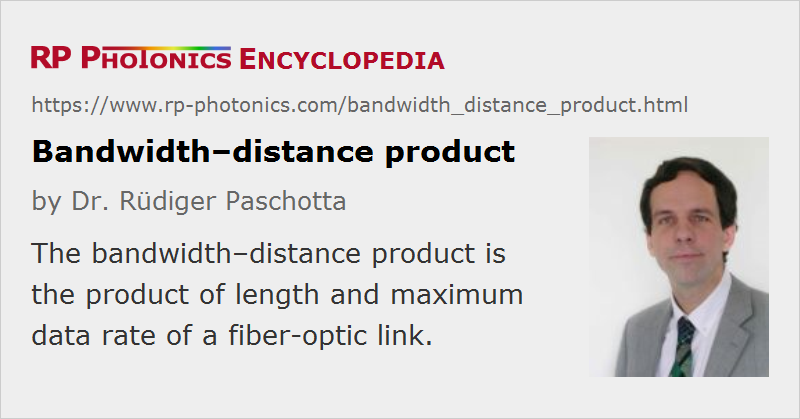

Bandwidth–distance Product
Definition: product of length and maximum signal bandwidth of a fiber-optic link
Alternative term: bandwidth–length product
German: Bandbreite-Distanz-Produkt
Categories: fiber optics and waveguides, lightwave communications
How to cite the article; suggest additional literature
Author: Dr. Rüdiger Paschotta
The term bandwidth–distance product (or bandwidth–length product) is often used in the context of optical fiber communications. It is usually defined as the product of the length of a fiber-optic link and its maximum signal bandwidth. That bandwidth is strongly related to the data rate (in Gbit/s), with a conversion factor which depends on the used modulation format. The bandwidth–distance product is typically limited by the phenomenon that the bit error rate rises sharply for too high data rates.
The concept of the bandwidth–distance product is helpful e.g. for comparing the performance of different types of fiber-optic links. However, the definition by no means implies that the achievable bandwidth–distance product is independent of the chosen fiber length. Whether this is the case, depends on the circumstances. It can be true for a link based on multimode fiber, the capacity of which is limited by intermodal dispersion; indeed, the bandwidth–distance product (based on the modal bandwidth) is mostly used in that domain. (A typical value may then be of the order of a few GHz·km for a graded-index fiber, or an order of magnitude less for step-index fibers.) On the other hand, in a link based on single-mode fiber, which is limited by chromatic dispersion and which does not contain means for dispersion compensation, a doubling of the data rate may enforce a reduction in the fiber length by a factor of four. The bandwidth–distance product is then effectively reduced by a factor of two. However, the transmission distance may of course also be doubled by concatenating two fiber-optic links with electronic regeneration between them.
Questions and Comments from Users
Here you can submit questions and comments. As far as they get accepted by the author, they will appear above this paragraph together with the author’s answer. The author will decide on acceptance based on certain criteria. Essentially, the issue must be of sufficiently broad interest.
Please do not enter personal data here; we would otherwise delete it soon. (See also our privacy declaration.) If you wish to receive personal feedback or consultancy from the author, please contact him e.g. via e-mail.
By submitting the information, you give your consent to the potential publication of your inputs on our website according to our rules. (If you later retract your consent, we will delete those inputs.) As your inputs are first reviewed by the author, they may be published with some delay.
See also: bandwidth, optical fiber communications, fiber-optic links, telecom fibers, graded-index fibers, bit error rate, modal bandwidth, differential mode delay
and other articles in the categories fiber optics and waveguides, lightwave communications
|  |
If you like this page, please share the link with your friends and colleagues, e.g. via social media:
These sharing buttons are implemented in a privacy-friendly way!